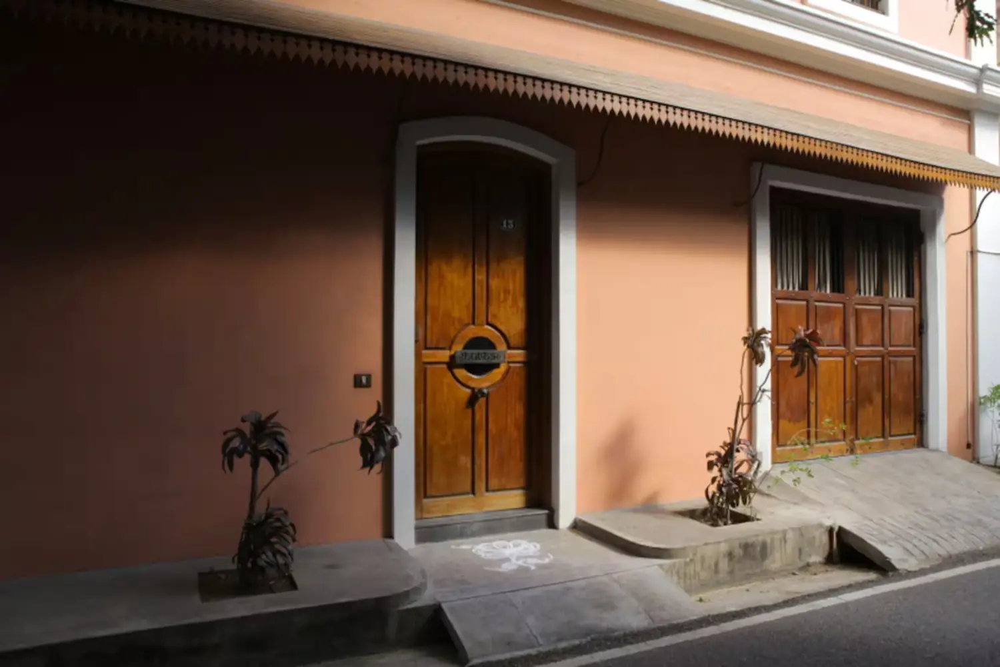
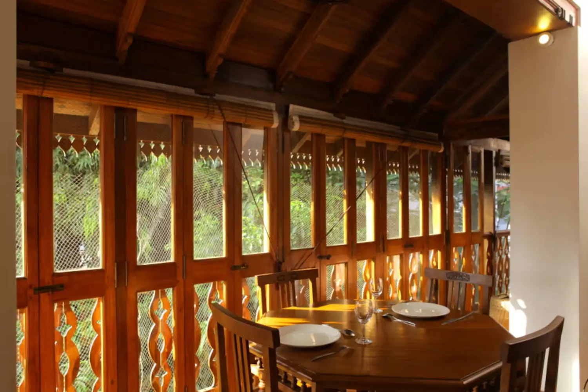

Tamil heritage
Timber balconies, carved railings and courtyard living in the manner of traditional Tamil houses.
White Town · Pondicherry
A heritage home of carved timber, terracotta walls and a quiet lap pool, a short walk from Promenade Beach.
Our Story
Shubham was built in 2008 by Devasmita and her husband Satyakam, an art lover with a deep interest in Indian culture, to restore the disappearing heritage of Pondicherry and its traditions. The house blends traditional Tamil houses with quintessential French architecture.
Art is part of the décor in every corner: a hand-painted bed from Kerala, paintings, antique furniture and carved woodwork. Briddhi is the room where the idea of a homestay first took shape.


Timber balconies, carved railings and courtyard living in the manner of traditional Tamil houses.
Ivory-bordered windows, louvred shutters and a round window set into warm terracotta walls.
Hand-painted furniture, paintings and antiques make each room its own small gallery.
Rooms
Each room has its own Airbnb listing and a private attached bathroom. Ratings are shown as listed on Airbnb on 28 October 2026.
Booking
Bookings are completed on the platform you choose. This website does not take payments.
The pool
One of the few places in the area with a pool, shared by guests and open year-round at set hours. The ground-floor room opens toward it, and the east balcony of Anubhuti looks over it. A proper swimming costume is required.
Amenities
Guests share an open terrace, two living rooms and outdoor dining areas.
Pondicherry Experiences
Distances marked “per Airbnb” come from our listing. Check opening hours and etiquette before you visit.
Gallery
Guest Reviews
Ratings below are from the Bhumi listing on Airbnb (170 reviews, 28 October 2026). Read every guest review on Airbnb.
Location
In the heart of the French Quarter, about a 5-minute walk from Promenade Beach. The exact address is shared with confirmed guests.
FAQ
Contact
Our hosts respond within an hour on Airbnb.